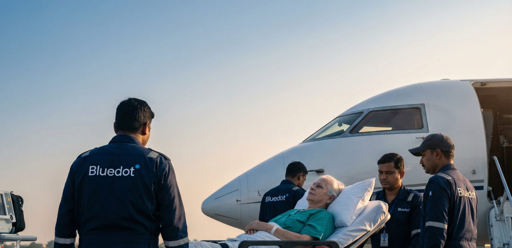
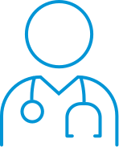

24/7 medically coordinated air transport — supporting patients who need to be transferred safely between hospitals, cities, and countries.

Serious illness or injury doesn’t always happen where the right care is available. When a patient needs to be transferred across cities or borders, every decision timing, routing, aircraft, medical capability directly affects the outcome
Most families and organisations aren’t equipped to manage complex medical transfers alone. It’s not just about arranging a flight. It’s knowing whether a patient is stable enough to travel. Which aircraft can support ICU-level care. How to move a ventilated patient across continents. Or how to coordinate hospitals, authorities, and medical teams under pressure.
Bluedot was built to manage these moments. With experienced medical professionals and operational teams, we provide 24/7 air ambulance coordination ensuring patients receive continuous care, wherever that care needs to go.
Our medical teams are trained to provide critical care during transport, including advanced respiratory support, cardiac monitoring, and emergency interventions. We ensure patients receive the necessary medical attention throughout their journey, whether it’s a short domestic transfer or a long international flight.

Every transfer begins with listening and medical review. We take the time to understand the patient’s condition, the current situation, and what level of care is required. What’s the diagnosis? Is the patient stable to travel? What risks need to be managed, and what options are available?
Every transfer begins with listening and medical review. We take the time to understand the patient’s condition, the current situation, and what level of care is required. What’s the diagnosis? Is the patient stable to travel? What risks need to be managed, and what options are available?
Every transfer begins with listening and medical review. We take the time to understand the patient’s condition, the current situation, and what level of care is required. What’s the diagnosis? Is the patient stable to travel? What risks need to be managed, and what options are available?
Every air medical transfer represents someone at a vulnerable moment, a patient, a family, and a network of clinicians working to ensure care continues safely. Here are examples of how we’ve supported patients and the organisations responsible for their care, across regions and borders.
Dedicated medical and operations teams managing cases around the clock
Transfers planned around patient condition and care needs, not schedules
Single point of contact with regular updates throughout the transfer
Accredited operations, Clinical oversight and compliance with international standards
Speak with our team to discuss medical transport options and find the right solution for your case.